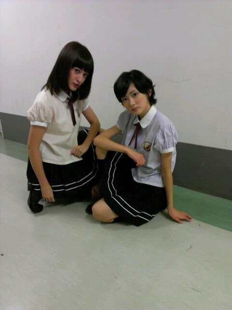

| 2012/10 14 Sun | 東京全国握手会ヽ( ・∀・)ノ |
今日は東京全国握手会でしたね!!
千葉の幕張メッセで行われました！
来てくださったみなさんありがとうございました

てかめちゃくちゃいらっしゃいましたね!!
今までで一番の人数だったんだってっ!!
乃木坂はこんなに愛されているんだな〜と実感しました。
嬉しいっ

今日はせっちゃんと同じレーンだったよ!!

かっこよくきめてみた。
どう('_'?)
(笑)
今日は初めましての方が多かったな〜ヽ(・∀・)ノ
すごく嬉しいこと。
それだけ乃木坂が知られてきているんだなと思いました。
頑張るぞ!!
あとお久しぶりの方(*^▽^*)
元気だった？
いこま顔はバッチリ覚えてるからね!!
会えて嬉しいっ!!
会いたかったってそんな〜いこまもずっとまだかな〜って待ってたんだから〜

もちろん！いつも来てくださってくれるみなさんありがとうございます!!
いろいろ話せて楽しかったです♪
今日お留守番の方っ
まだまだ会える機会は沢山あるからね!!
あと真夏復活をみなさん迎えて下さってありがとうございます!!
大丈夫！
真夏は俺が守るっ(笑)
なんてみんな仲良しだからね!!
新生乃木坂みてろよっ!!
うちも頑張るからみなさんいこまの力になって下さい。
握手会大好き！
いこまふぁむ大好き！

あといこまふぁむの名前をつけたいな〜と思っていまして、
と言うことでいこまふぁむの名前大募集☆
コメントの所に書いて頂けたら嬉しいです!!
あと今まで出来なくてごめんなさい!!
質問も大募集☆
よろしくお願いします!!
ではまた会えるのを楽しみにしていまーす!!
走れ！bicycleの全国握手会は今日で最後でしたが、最高のものにできました！
ではっ
へばなっ!!
コメント(583)
2012/10/14 20:30